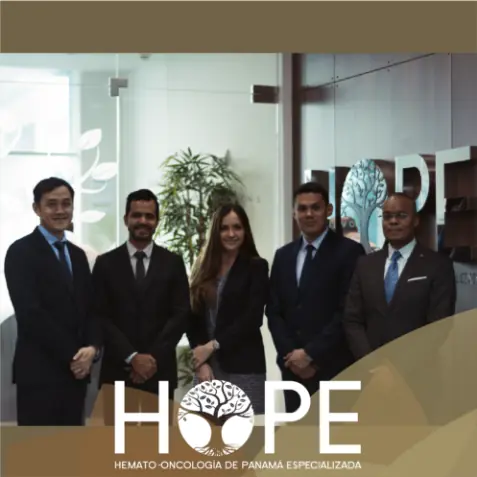

Orientación inicial
Escuchamos tu necesidad y te guiamos hacia la atención adecuada.
Centro médico especializado · Panamá
Ciencia que cuida
Humanidad que acompaña
Atención especializada, diagnóstico preciso y acompañamiento integral en cada etapa del proceso.

Nuestra manera de cuidar
Integramos hematología, oncología y soporte emocional para ofrecer una experiencia de atención clara, coordinada y cercana.
Especialidades principales
Integramos atención médica especializada y acompañamiento emocional para pacientes, familiares y cuidadores.
Evaluación, segunda opinión, planificación de tratamientos y seguimiento oncológico coordinado.
Conocer la atención oncológica 02Especialidad médicaValoración especializada de anemias, alteraciones sanguíneas y enfermedades de la médula ósea.
Conocer la atención hematológica 03Acompañamiento especializadoApoyo emocional para pacientes, familiares y cuidadores durante el diagnóstico, tratamiento y recuperación.
Conocer la atención psicooncológicaCuidado integral
Desde la primera valoración hasta el tratamiento y el seguimiento, reunimos la atención que necesitas en un mismo lugar.
Ver todos los serviciosCondiciones que tratamos
Conoce algunas de las condiciones hematológicas y oncológicas que evalúa nuestro equipo.
Explorar condicionesTu ruta de atención
Coordinamos cada paso para que sepas qué esperar y quién te acompaña.
Escuchamos tu necesidad y te guiamos hacia la atención adecuada.
Revisamos tu historia, estudios y opciones con claridad.
Definimos una ruta de diagnóstico, tratamiento o seguimiento.
Mantenemos seguimiento clínico y orientación continua.
Especialistas
Conoce a los profesionales que acompañan cada decisión de tu cuidado.
Ver equipo completoRespaldo y cobertura
Nuestro equipo administrativo te orienta sobre autorizaciones, documentación y los pasos previos a tu atención.
Consultar coberturaVisítanos
Consultorios Pacífica Salud, Piso 8.
Estamos para orientarte
Conversemos sobre tu cita, tus estudios o el servicio que necesitas.